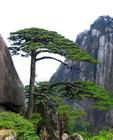
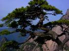

plant introduce
Platycladus orientalis
Culture
Grow in fertile, medium moisture, well-drained soils in full sun. Tolerates some light afternoon shade. Appreciates good air circulation. Water plants regularly in hot and dry weather. In St. Louis, site in locations sheltered from strong winds. Plants may not be reliably winter hardy throughout the northern parts of USDA Zone 5.
Noteworthy CharacteristicsPlatycladus orientalis, commonly called Oriental thuja or Oriental arborvitae, typically grows as a dense, conical to columnar tree to 18-25’ tall. Also grows as a large shrub. Plants tend to open up with age. Scale-like yellowish-green leaves in flattened sprays in youth, becoming darker green with age. Foliage may bronze up in winter. Oval cones (to 3/4” long). Reddish-brown bark. Compact shrubby cultivars are much more common in cultivation than the species. Synonymous with Thuja orientalis and Biota orientalis. Genus name comes from the Greek platys meaning broad and klados meaning a branch for the branchlets being two-ranked in a vertical plane.
 